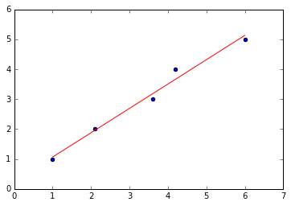
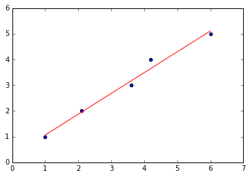
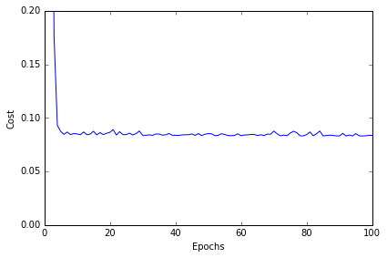

LinearRegression
A implementation of Ordinary Least Squares simple and multiple linear regression.
from mlxtend.regressor import LinearRegression
Overview
Illustration of a simple linear regression model:

In Ordinary Least Squares (OLS) Linear Regression, our goal is to find the line (or hyperplane) that minimizes the vertical offsets. Or in other words, we define the best-fitting line as the line that minimizes the sum of squared errors (SSE) or mean squared error (MSE) between our target variable (y) and our predicted output over all samples
Now, LinearRegression implements a linear regression model for performing ordinary least squares regression using one of the following three approaches:
- Normal Equations
- Gradient Descent
- Stochastic Gradient Descent
Normal Equations (closed-form solution)
The closed-form solution should be preferred for "smaller" datasets where calculating (a "costly") matrix inverse is not a concern. For very large datasets, or datasets where the inverse of
The linear function (linear regression model) is defined as:
where
Using the closed-form solution (normal equation), we compute the weights of the model as follows:
Gradient Descent (GD) and Stochastic Gradient Descent (SGD)
See Gradient Descent and Stochastic Gradient Descent and Deriving the Gradient Descent Rule for Linear Regression and Adaline for details.
Random shuffling is implemented as:
- for one or more epochs
- randomly shuffle samples in the training set
- for training sample i
- compute gradients and perform weight updates
- for training sample i
- randomly shuffle samples in the training set
References
- F. Galton. Regression towards mediocrity in hereditary stature. Journal of the Anthropological Institute of Great Britain and Ireland, pages 246–263, 1886.
- A. I. Khuri. Introduction to linear regression analysis, by Douglas C. Montgomery, Elizabeth A. Peck, G. Geoffrey Vining. International Statistical Review, 81(2):318–319, 2013.
- D. S. G. Pollock. The Classical Linear Regression Model.
Examples
Example 1 - Closed Form Solution
import numpy as np
import matplotlib.pyplot as plt
from mlxtend.regressor import LinearRegression
X = np.array([ 1.0, 2.1, 3.6, 4.2, 6])[:, np.newaxis]
y = np.array([ 1.0, 2.0, 3.0, 4.0, 5.0])
ne_lr = LinearRegression(minibatches=None)
ne_lr.fit(X, y)
print('Intercept: %.2f' % ne_lr.b_)
print('Slope: %.2f' % ne_lr.w_[0])
def lin_regplot(X, y, model):
plt.scatter(X, y, c='blue')
plt.plot(X, model.predict(X), color='red')
return
lin_regplot(X, y, ne_lr)
plt.show()
Intercept: 0.25
Slope: 0.81

Example 2 - Gradient Descent
import numpy as np
import matplotlib.pyplot as plt
from mlxtend.regressor import LinearRegression
X = np.array([ 1.0, 2.1, 3.6, 4.2, 6])[:, np.newaxis]
y = np.array([ 1.0, 2.0, 3.0, 4.0, 5.0])
gd_lr = LinearRegression(eta=0.005,
epochs=100,
minibatches=1,
random_seed=123,
print_progress=3)
gd_lr.fit(X, y)
print('Intercept: %.2f' % gd_lr.w_)
print('Slope: %.2f' % gd_lr.b_)
def lin_regplot(X, y, model):
plt.scatter(X, y, c='blue')
plt.plot(X, model.predict(X), color='red')
return
lin_regplot(X, y, gd_lr)
plt.show()
Iteration: 100/100 | Cost 0.08 | Elapsed: 0:00:00 | ETA: 0:00:00
Intercept: 0.82
Slope: 0.22

# Visualizing the cost to check for convergence and plotting the linear model:
plt.plot(range(1, gd_lr.epochs+1), gd_lr.cost_)
plt.xlabel('Epochs')
plt.ylabel('Cost')
plt.ylim([0, 0.2])
plt.tight_layout()
plt.show()

Example 3 - Stochastic Gradient Descent
import numpy as np
import matplotlib.pyplot as plt
from mlxtend.regressor import LinearRegression
X = np.array([ 1.0, 2.1, 3.6, 4.2, 6])[:, np.newaxis]
y = np.array([ 1.0, 2.0, 3.0, 4.0, 5.0])
sgd_lr = LinearRegression(eta=0.01,
epochs=100,
random_seed=0,
minibatches=len(y))
sgd_lr.fit(X, y)
print('Intercept: %.2f' % sgd_lr.b_)
print('Slope: %.2f' % sgd_lr.w_)
def lin_regplot(X, y, model):
plt.scatter(X, y, c='blue')
plt.plot(X, model.predict(X), color='red')
return
lin_regplot(X, y, sgd_lr)
plt.show()
Intercept: 0.24
Slope: 0.81

plt.plot(range(1, sgd_lr.epochs+1), sgd_lr.cost_)
plt.xlabel('Epochs')
plt.ylabel('Cost')
plt.ylim([0, 0.2])
plt.tight_layout()
plt.show()

Example 3 - Stochastic Gradient Descent with Minibatches
import numpy as np
import matplotlib.pyplot as plt
from mlxtend.regressor import LinearRegression
X = np.array([ 1.0, 2.1, 3.6, 4.2, 6])[:, np.newaxis]
y = np.array([ 1.0, 2.0, 3.0, 4.0, 5.0])
sgd_lr = LinearRegression(eta=0.01,
epochs=100,
random_seed=0,
minibatches=3)
sgd_lr.fit(X, y)
print('Intercept: %.2f' % sgd_lr.b_)
print('Slope: %.2f' % sgd_lr.w_)
def lin_regplot(X, y, model):
plt.scatter(X, y, c='blue')
plt.plot(X, model.predict(X), color='red')
return
lin_regplot(X, y, sgd_lr)
plt.show()
Intercept: 0.23
Slope: 0.81

plt.plot(range(1, sgd_lr.epochs+1), sgd_lr.cost_)
plt.xlabel('Epochs')
plt.ylabel('Cost')
plt.ylim([0, 0.2])
plt.tight_layout()
plt.show()

API
LinearRegression(eta=0.01, epochs=50, minibatches=None, random_seed=None, print_progress=0)
Ordinary least squares linear regression.
Parameters
-
eta: float (default: 0.01)solver rate (between 0.0 and 1.0)
-
epochs: int (default: 50)Passes over the training dataset. Prior to each epoch, the dataset is shuffled if
minibatches > 1to prevent cycles in stochastic gradient descent. -
minibatches: int (default: None)The number of minibatches for gradient-based optimization. If None: Normal Equations (closed-form solution) If 1: Gradient Descent learning If len(y): Stochastic Gradient Descent learning If 1 < minibatches < len(y): Minibatch learning
-
random_seed: int (default: None)Set random state for shuffling and initializing the weights.
-
print_progress: int (default: 0)Prints progress in fitting to stderr if not solver='normal equation' 0: No output 1: Epochs elapsed and cost 2: 1 plus time elapsed 3: 2 plus estimated time until completion
Attributes
-
w_: 2d-array, shape={n_features, 1}Model weights after fitting.
-
b_: 1d-array, shape={1,}Bias unit after fitting.
-
cost_: listSum of squared errors after each epoch; ignored if solver='normal equation'
Methods
fit(X, y, init_params=True)
Learn model from training data.
Parameters
-
X: {array-like, sparse matrix}, shape = [n_samples, n_features]Training vectors, where n_samples is the number of samples and n_features is the number of features.
-
y: array-like, shape = [n_samples]Target values.
-
init_params: bool (default: True)Re-initializes model parametersprior to fitting. Set False to continue training with weights from a previous model fitting.
Returns
self: object
predict(X)
Predict targets from X.
Parameters
-
X: {array-like, sparse matrix}, shape = [n_samples, n_features]Training vectors, where n_samples is the number of samples and n_features is the number of features.
Returns
-
target_values: array-like, shape = [n_samples]Predicted target values.